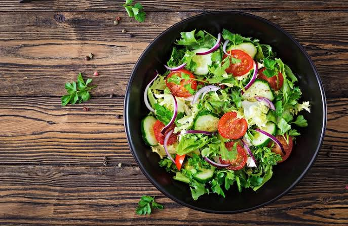

Description
This tutorial instructs determined individuals on how to make a delicious salad from scratch. Follow along with the steps listed below to enjoy a yummy and fresh salad!

This tutorial instructs determined individuals on how to make a delicious salad from scratch. Follow along with the steps listed below to enjoy a yummy and fresh salad!